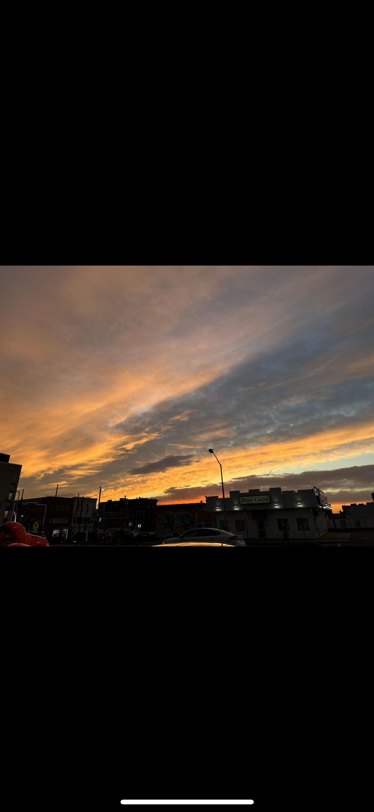
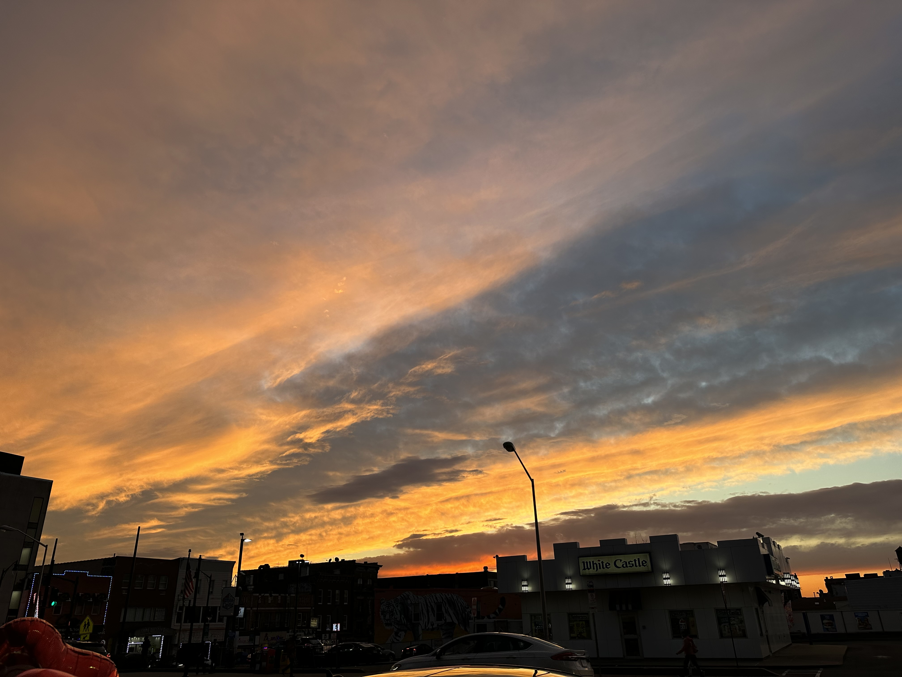
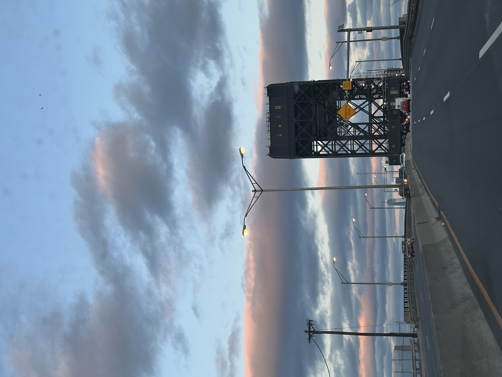
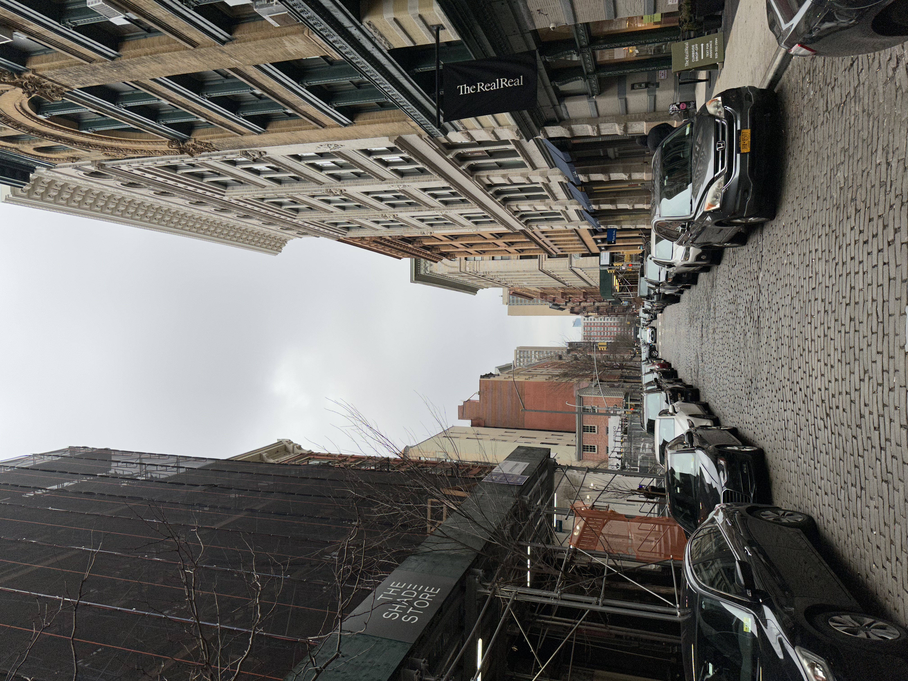
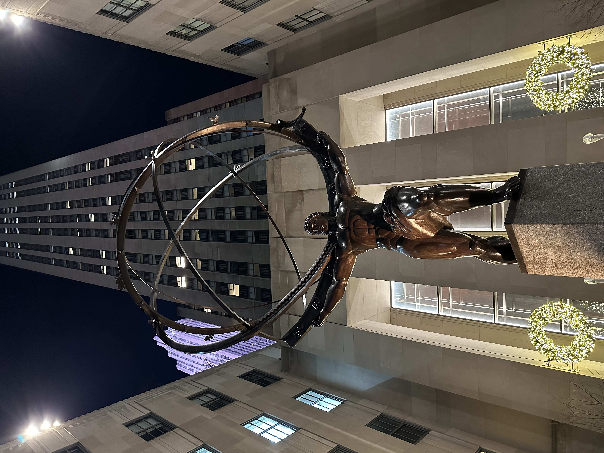
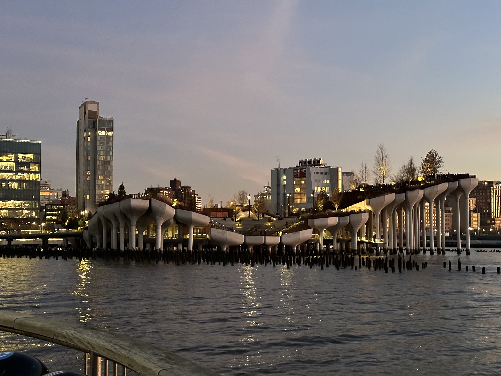
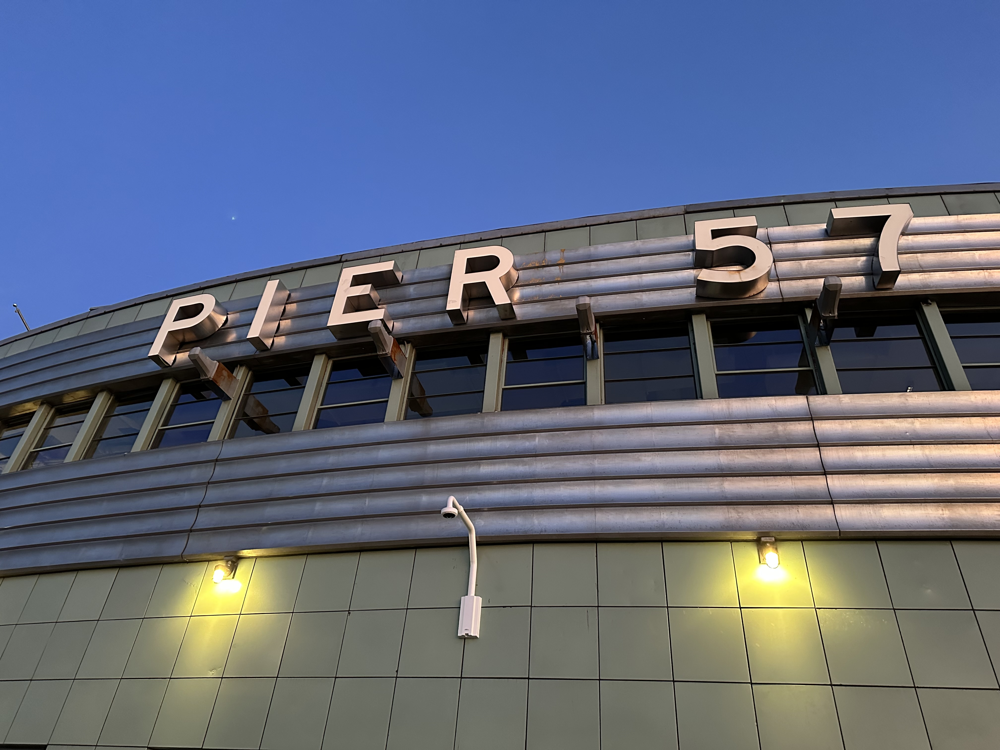

Sunset Horizon Study
Captured layered evening light across the horizon with emphasis on warm gradients and atmospheric depth.
A curated set of visual and product design work that complements my technical projects. I enjoy combining aesthetic direction with structured systems thinking.
A selection of my visual work and photography studies focused on composition, lighting, color contrast, and city-scale storytelling.

Captured layered evening light across the horizon with emphasis on warm gradients and atmospheric depth.

Focused on richer tonal transitions between cloud layers and sky bands to highlight motion in the scene.

Urban roadway composition that emphasizes leading lines, speed, and depth through a forward perspective.

Street-level city capture documenting everyday motion, layered architecture, and dynamic ambient lighting.

Framed a civic landmark with a clean vertical composition to emphasize scale, detail, and environment.

Open landscape study balancing natural elements and horizon geometry for a calm, wide-field visual.

Waterfront architecture and skyline capture focused on spatial contrast between structural lines and open water.

Abstract color study using fluid marbling textures to explore contrast, motion, and high-saturation blending.
Duplicate a card and replace image + text:
<article class="gallery-item">
<img src="YOUR-IMAGE-LINK" alt="Creative sample" />
<div class="body">
<h3>Project Title</h3>
<p>One to two lines describing the visual, tools used, and purpose.</p>
</div>
</article>